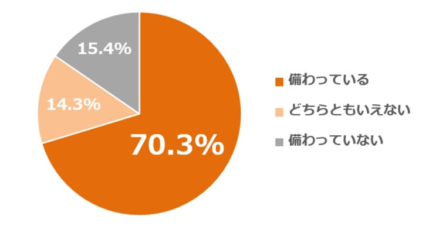
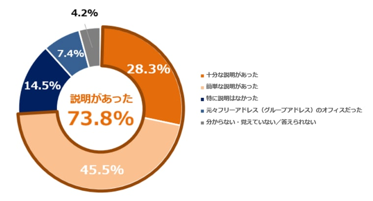
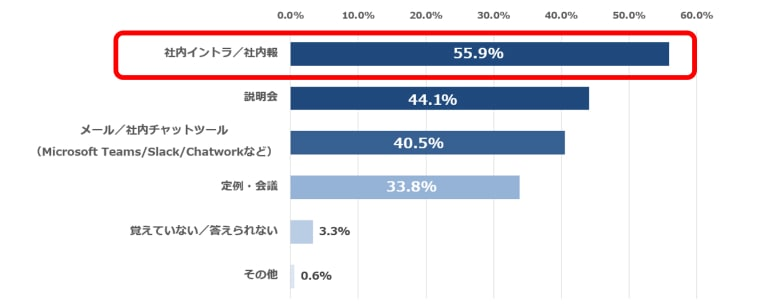
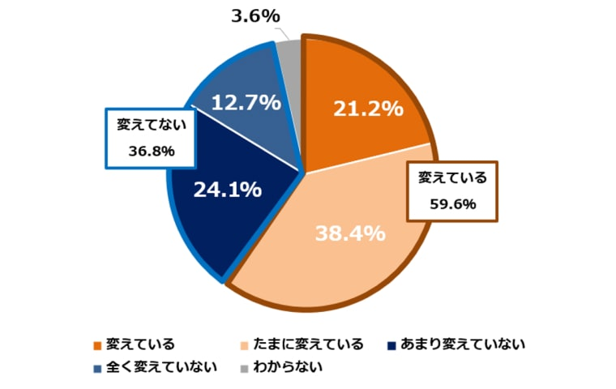
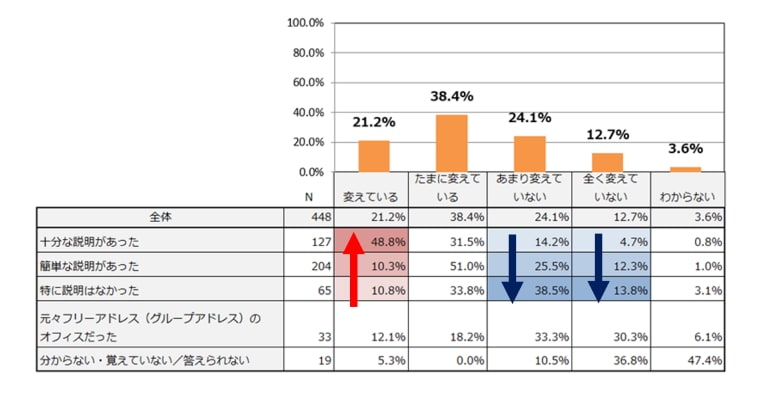
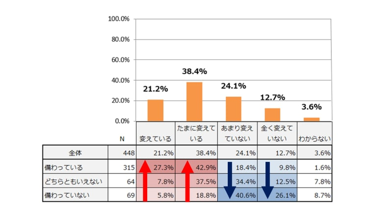

はたらき方改革やハイブリットワークの普及により、はたらき方が多様化し、オフィスの見直しを検討している企業も多いかと思います。こうした状況の中、社員同士のコミュニケーション促進やオフィススペースの有効活用を目的に、「フリーアドレス」の導入企業が増加しています。一方で、フリーアドレスを導入したものの、効果的に運用できず、結果的に席が固定化してしまうというお悩みを抱える企業も多いです。この記事では、フリーアドレス環境ではたらくワーカーを対象に行った実態調査をもとに、「席の固定化」の原因と運用ポイントについて解説します。ぜひ、参考にしてください。
フリーアドレスとは、‟社員が自分の席を持たず、自由に席を選んで仕事ができるワークスタイル”のことです。はたらき方の多様性が重要視されている近年、注目されているワークスタイルの一つです。
フリーアドレス下ではたらくワーカーに、オフィス内に多様な用途のエリアがあるかどうかを調査したところ、約7割が「備わっている」と回答しました。このことから、フリーアドレス導入とオフィス環境の構築はセットで行われている会社が多いことが読み取れます。
Q：オフィス内で業務に合わせて選べるような多様な用途のエリアが備わっているか？
フリーアドレス導入時に、総務部や人事部など管轄部門から導入の目的や背景についての説明があったかを調査しました。その結果、「十分な説明があった」28.3％、「簡単な説明があった」45.5％と7割以上の人が何らかの説明があったと回答。「特に説明はなかった」は14.5％でした。説明方法は、「社内イントラ/社内報」が55.9%でトップ。次いで、「説明会」44.1％、「メール/社内チャットツール」40.5％と続きます。
Q：フリーアドレス導入時、総務や人事から導入の目的や背景について説明があったか？
Q：どのような方法で説明があったか？
フリーアドレスの利用状況を探るため、仕事をする上で意識的に座る場所を変えているかを調査しました。その結果、「たまに変えている」が38.4%と一番多く、次いで「あまり変えてない」24.1%、「変えている」21.2%、「全く変えていない」12.7%、「わからない」3.6%。この結果から、約6割の人が意識的に座る場所を変えており、約4割は席が固定化しがちであることが分かりました。
Q：座る場所が固定化しないよう、毎回意識して席を変えているか？
では、席を変える人とそうでない人の違いは、一体どこにあるのでしょうか。
調査結果をさらに深堀して、ポイントを見ていきます。
「席を変えている」と回答した人のうち、「フリーアドレス導入時に説明があった」と回答した人ほど意識的に席を変えている傾向があることが分かりました。フリーアドレスを上手く運用するためには、導入時にワーカーに向けた丁寧な説明をすることが重要であると言えます。
Q:座る場所が固定化しないように、毎回意識して席を変えているか？
Q:フリーアドレス導入時、総務や人事から導入の目的や背景の説明があったか？
「多様なエリアが備わっている」オフィスで働く人ほど、意識的に「席を変えている」「たまに変えている」と回答する割合が高いことが分かりました。一方で、「多様なエリアは備わってない」人ほど、席の固定化率が高くなっている傾向があります。オフィス内に多様なエリアが備わっている人は、備わっていない人と比べると、意識的に「席を変えている」が5倍以上多くなっています。この結果から、フリーアドレスをうまく運用するには、席をフリーアドレス化するだけではなく、業務に合わせて選べる多様なエリアがオフィス内に充実しているかが大きく影響すると言えます。多様なエリアが備わっていることで、はたらく席を自分で選ぶ意識がワーカーに芽生え、より周遊させやすくするのではと推察します。
Q:座る場所が固定化しないように、毎回意識して席を変えているか？
Q:業務に合わせて選べる多様なエリアが備わっているか？
この結果から、席の固定化にはフリーアドレス導入時の十分な説明やオフィス環境の充実度合が大きく関わっていることが分かりました。では、オフィス環境が充実することで、ワーカーのはたらき方にどのような効果が期待されるのでしょうか。席を変える人/席を変えない人の意識や行動にはどのような差が生まれるのでしょうか。調査結果をもとに、席が固定化する要因を紐解きながら、フリーアドレスを運用する上で大切なことは何かについて、詳細の調査データ内でお伝えしています。
詳細データをご希望の方は、下記よりダウンロードください。
| 【調査概要】 | |
|---|---|
| 目的 | フリーアドレス導入企業における「席の固定化」の原因をワーカー視点で探るため。 |
| 対象エリア | 東京、埼玉、千葉、神奈川、愛知、大阪 |
| 対象年齢 | 20～50代のオフィスワーカー |
| 調査期間 | 2024/3/29～2024/4/2 |
| 有効回答数 | 448サンプル |
| 調査方法 | インターネット調査 |
| 調査機関 | パーソルファシリティマネジメント株式会社 |
| ※調査データを使用する際は、出典元に必ず「パーソルファシリティマネジメント株式会社」の記載をお願い申し上げます。 | |

03-6385-684403-6385-6844 （受付時間 平日 10:00〜18:00）